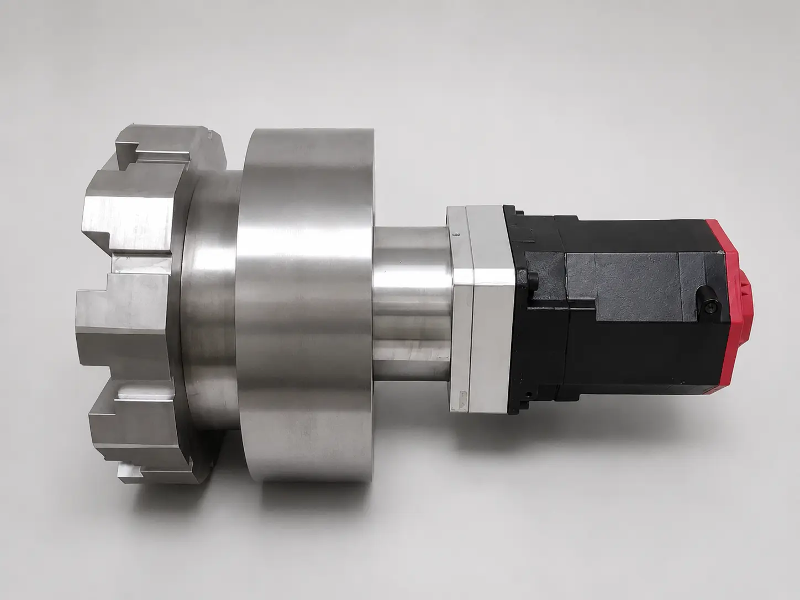

기술소개
비접촉 토크 전달 기반 N:1 비접촉 마그네틱(전기) 감속기의 특징, 작동 원리, 적용 분야를 소개합니다.
N:1 비접촉 마그네틱(전기) 감속기
마그네틱 기어 기술을 적용하여 비접촉 방식으로 토크를 전달하는 감속기입니다. 마모, 소음, 윤활 관리 부담이 큰 구동 환경에서 적용 가능성을 검토할 수 있습니다.
- 비접촉 토크 전달
- 높은 효율과 신뢰성
- 소음·진동 저감
- 정밀 운전 및 제어 가능
- 청정 환경 적용 가능
기술 특징
마그네틱 감속기의 장점은 현장에서 발생하는 파손, 유지보수, 윤활 관리 부담을 줄이는 데 있습니다.
비접촉 토크 전달
기어 치면이 직접 맞물리지 않고 자기력으로 동력을 전달합니다. 순간적인 충돌이나 과부하 상황에서도 접촉식 기어처럼 치형이 깨지며 2차 파손으로 번지는 위험을 줄일 수 있습니다.
소음·진동 저감
맞물림 충격과 반복 마찰을 줄여 운전 소음과 진동을 낮추는 데 유리합니다. 정숙성이 필요한 정밀 장비와 작업 환경에 적합합니다.
유지보수 부담 감소
영구자석 기반의 비접촉 구동 구조로 치면 마모와 윤활 관리 부담을 줄입니다. 운전 조건에 따라 정기 점검 중심의 관리 체계로 단순화할 수 있습니다.
청정 환경 대응
윤활유 사용량을 줄이거나 없애는 방향으로 설계할 수 있어 오염 관리, 폐유 처리, 주기적 보충 비용을 낮추는 데 기여합니다. 일·월·연 단위 윤활 관리 비용까지 고려하면 친환경성과 운영비 절감 효과를 함께 설명할 수 있습니다.
정밀 제어
기계적 백래시와 마찰 요인을 줄여 안정적인 감속비와 토크 전달을 목표로 합니다. 정밀 위치 제어가 필요한 장비에 적용성을 검토할 수 있습니다.
작동 원리
내·외부 로터에 영구자석을 배치하여 자속을 통해 기계적 접촉 없이 토크를 전달합니다.

적용 분야
클린룸 장비, 정밀 스테이지
분석 장비, 무균 환경 장비
협동로봇, 정밀 액추에이터
진공, 클린룸, 식품 장비
정밀 구동 시험 장비
기술 도입 및 협력을 원하시나요?
아이엠에르텍의 전문 엔지니어가 적용 가능성을 함께 검토합니다.